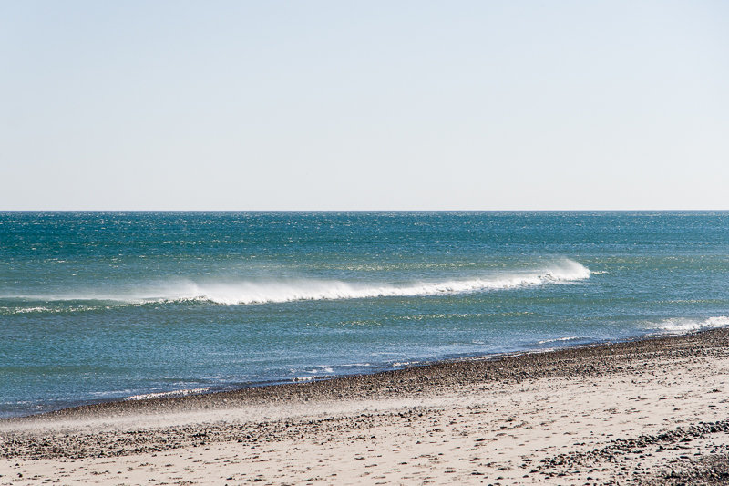

Humarock is known as a small little beach village in Marshfield. Of course there is Humarock beach, but Humarock is also a place to go fishing, jump off bridges, and eat out at the famous Bridgeway overlooking the river. During the day you can paddle board or float down the river. I am fortunate to live 2 minutes up a hill from Humarock and appreciate all the different ice cream shop options. Humarock beach is famous around the third and forth of July. The roads get blocked off and fireworks are everywhere!
